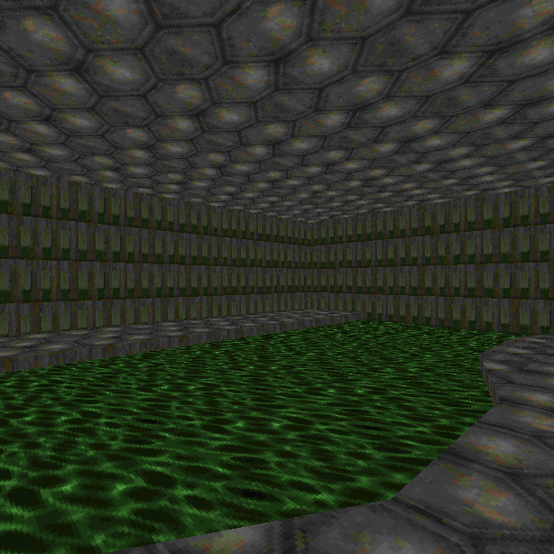
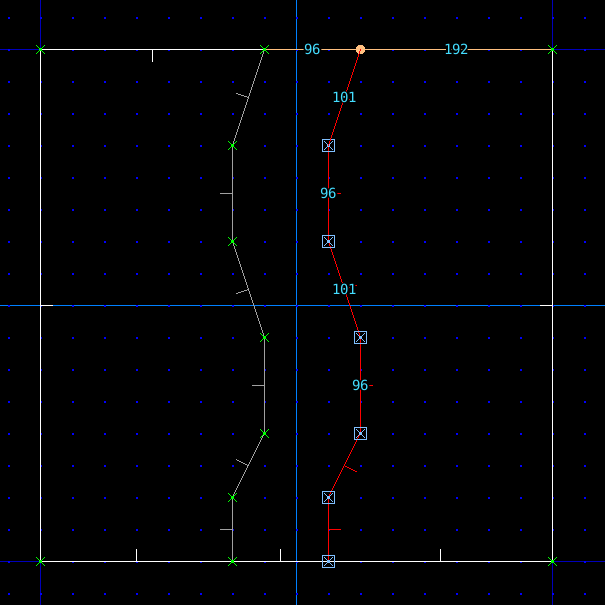
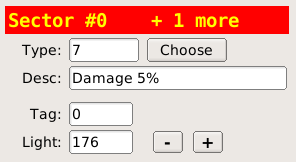
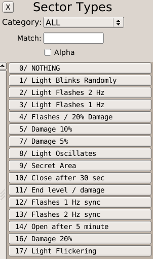

back to the Index | go to next page
Toxic Pool

Toxic waste causes damage when walked on.
Method
- Press v for vertices edit mode
- Click the RMB to draw a path

- Press s for sector edit mode
- Press ` to deselect everything
- Select all the sectors that will become the toxic pools
- Click the Floor texture button and pick the NUKAGE1 texture
- Choose the sector type using the Choose button


- Press ` to deselect everything
- Select the sector that will become the walkable path
- Raise the Floor height by clicking the floor + button
- Alternatively press the , . keys to adjust floor height via keyboard
Downloads
toxicpool.wad
back to the Index | go to next page